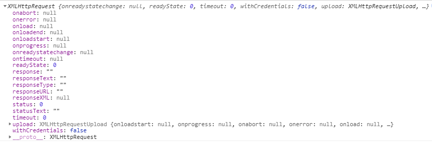
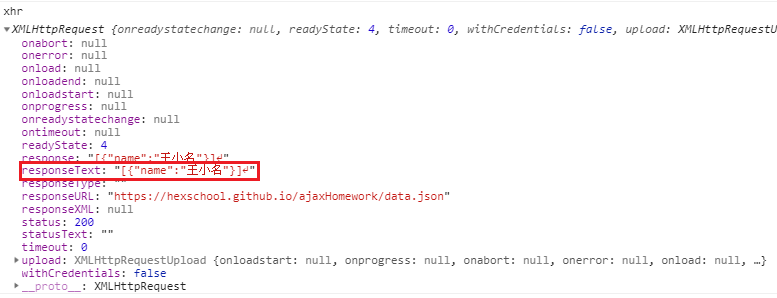

JavaScript - AJAX
透過 AJAX，可與伺服器進行非同步更新，不需要重新載入網頁就可以更新內容
什麼是 AJAX ?
AJAX 全名為 非同步 JavaScript 與 XML(Asynchronous JavaScript and XML)，其實並不能稱為一種 “新技術”，而是結合許多現有技術的 “新方法”，這些技術包括 HTML、XHTML、JavaScript、DOM 與最重要的 XMLHttpRequest 物件等
為什麼需要 AJAX ?
透過 AJAX 我們可以不需要重新讀取整個網頁就能及時更動網頁介面與內容，只會對改變的地方進行動態重新渲染，提高網頁效能並更快回復使用者的操作，常見於用戶註冊、驗證，不需要等到資料填完就會顯示是否重複或錯誤
AJAX 應用
- 使用 JavaScript 的
XMLHttpRequest物件向網頁伺服器發送HTTP請求 - 使用 JavaScript 操作
DOM來執行動態效果 XMLHttpRequest與 “網頁伺服器” 進行 “非同步” 資料交換
AJAX 操作
XMLHttpRequest 物件
- 宣告一個
XMLHttpRequest物件
當宣告一個XMLHttpRequest物件後，我們可以透過console.log來查看這個物件的屬性，並透過這些屬性來操作資料與確認狀態1
2var xhr = new XMLHttpRequest();
console.log(xhr);

.open("格式", "網址", "同步/非同步")定義連線方式1
xhr.open("get", "https://hexschool.github.io/ajaxHomework/data.json", true);
- 格式
get: 讀取資料post: 傳資料到伺服器確認
- 網址
要讀取的資料位置 - 同步與非同步
通常都使用true非同步，否則當資料太大時，會等到資料傳送完畢才會繼續渲染網頁true非同步: 不會等資料傳回來，就會讓程式碼繼續往下跑false同步: 會等資料傳回來，才讓程式碼繼續往下跑
- 格式
send()送出請求
在定義完連線方式後，接著就會送出請求，小括號()內放入要送出的資料，如果只是要取得資料，就會填入null1
xhr.send(null);
responseText資料內容
送出請求後我們可以透過responseText來查看資料內容

但如果在送出請求後，接著使用console.log來查看資料，會發現取得 空值，因為AJAX是 “非同步” 取得資料，所以在取得資料前網頁就會渲染完畢1
console.log(xhr.responseText); // 空值
onload成功取得資料後執行
要解決上述問題，只要使用onload在成功取得資料後再印出結果，要注意的是，從.json檔案取得的資料型態是 “字串”，所以要使用JSON.parse還原資料型態1
2
3
4<p class="message"></p>
<!-- after js -->
<p class="message">王小明</p>1
2
3
4// in json
[
{name: "王小名"}
]1
2
3
4
5xhr.onload = function (){
console.log(xhr.responseText); // "[{"name":"王小名"}]"
var str = JOSN.parse(xhr.responseText);
document.querySelector('.message').textContent = str[0].name;
};onerror取得資料失敗後執行
除了設定成功取得資料後執行的內容，當然也可以設定取得資料失敗後執行的內容1
xhr.onerror = function (){...};
readyState 狀態碼
在操作 XMLHttpRequest 物件的每個步驟都會有專屬的狀態碼以辨別當下進度
通常 2、3 會在一瞬間執行完畢，所以在取得資料後查看會是 4
0: 已經宣告一個XMLHttpRequest物件，但是還沒有連結要取得的資料1: 使用open()撈資料，但還沒有傳送資料2: 偵測到使用send3:loading資料中4: 已經取得資料，且完全接收數據
傳統表單輸入
傳統的表單如下，輸入資料後，會傳送到 action 所指定的位置
1 | <form action="index.html"> |
傳送的資料以問號 ? 隔開 “位置” 內容，如果有多筆內容，使用 & 隔開
1 | "指定的網址" + "?" + "內容" + "內容" |
post 傳送表單資料
如果要發送資料到資料庫，在
open()中的第一個參數為post因為要發送的資料會直接寫在
send()中，所以需要先使用setRequestHeader來設定資料類型，如果發送的資料類型是表單，分別設立兩個參數為Content-Type和application/x-www-form-urlencoded如上 “傳統表單” 送出一樣的資料
1
2
3
4var xhr = new XMLHttpRequest();
xhr.open('post', 'https://hexschool-tutorial.herokuapp.com/api/signup', true);
xhr.setRequestHeader('Content-type', 'application/x-www-form-urlencoded');
xhr.send('email=abc@gmail.com&password=abcde');傳送資料過去後，可以使用 console.log 查詢回傳的資料
1
console.log(xhr.responseText); // {"success":true,"result":{},"message":"帳號註冊成功"}
如果帳號已經被註冊。就會出現以下結果
1
console.log(xhr.responseText); // {"success":false,"result":{},"message":"此帳號已被使用"}
post JSON
除了使用 post 傳送表單格式資料外，也可以直接傳送 json 格式，只要把 setRequestHeader() 中第二個參數改成 application/json， 但要注意的是，和 localStorage 一樣，都是使用 “字串” 來傳送，所以要使用 JSON.stringify 和 JSON.parse 來轉換型態
1 | var account = { |
CORS (Corss-Origin Resourse Sharing) 跨來源資源共享
在開發網頁時，常常需要串接外部的資料、API，這時候我們就會對伺服器送出一個 HTTP request 請求，但是當瀏覽器收到來自伺服器的 HTTP response 回應時，基於安全性考量，在網站與資料 “不同源” not same origin 的情況下，瀏覽器並不會把收到的 response 回傳給 JavaScript
而 CORS 就是一個允許不同源之間資料傳輸的規範，透過以下網站可以判定這個外接網址是否有開啟 CORS
詳細說明可以參考以下資料
HTTP 狀態碼
HTTP 狀態碼指的是伺服器回應 HTTP response 我們發出的請求 ，而 HTTP request``HTTP 狀態碼分為五大類、三個層級，而三個層級分別使用三個數字來表示，第一個數字就表示大類
- 1xx - 參考資訊 (informational)
- 2xx - 成功 (OK)
- 3xx - 重新導向 (Redirection)
- 4xx - 用戶端錯誤 (Client Error)
- 5xx - 伺服器錯誤 (Server Error)
最常見的為以下兩種
- 200 : 用戶端請求成功
- 404 : 找不到用戶端請求
詳細內容操考以下資料
HTTP狀態碼 Wiki
網頁開發人員應了解的 HTTP 狀態碼